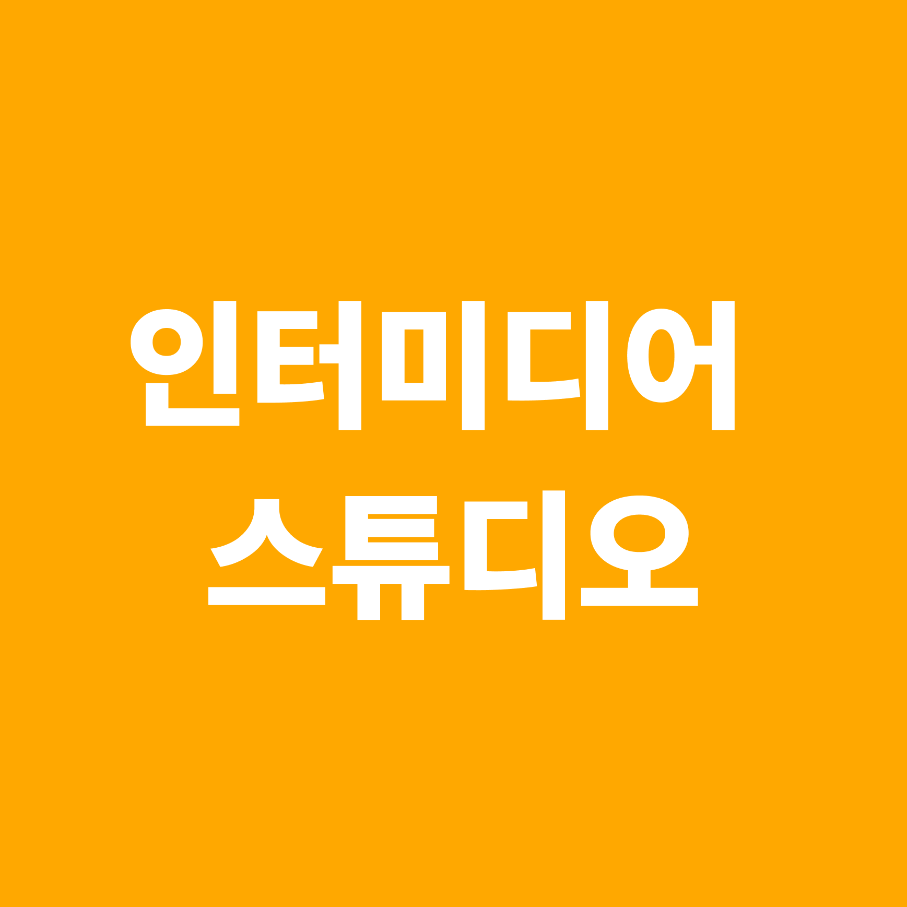
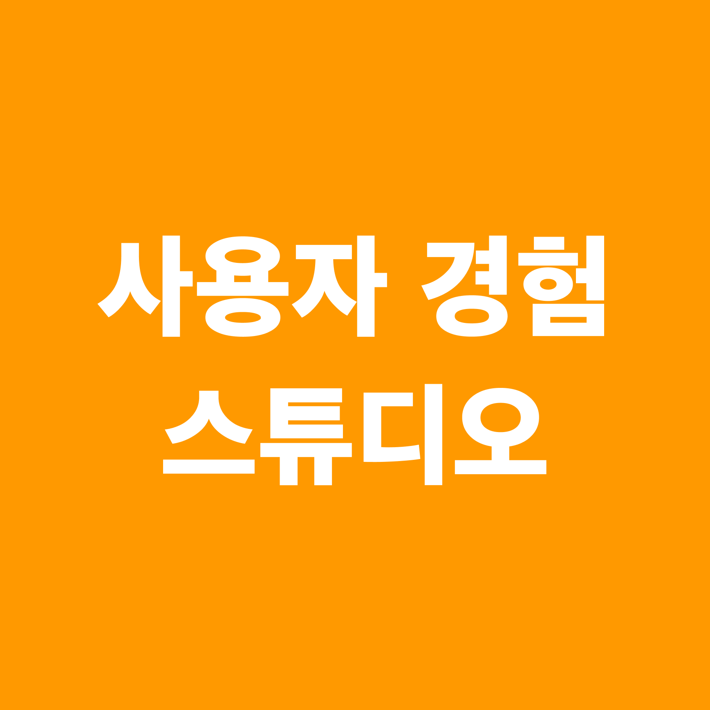
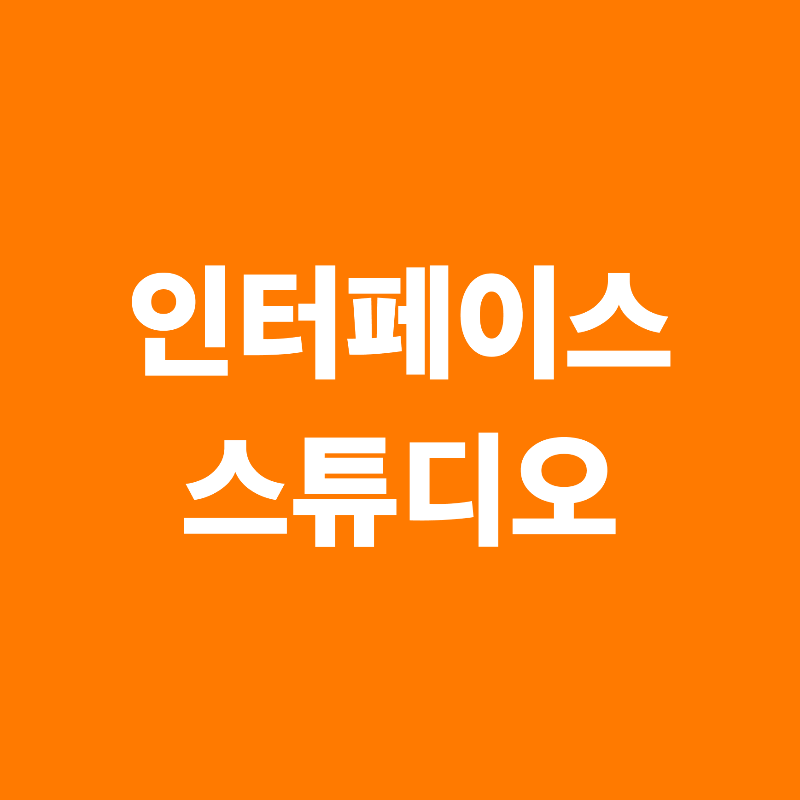
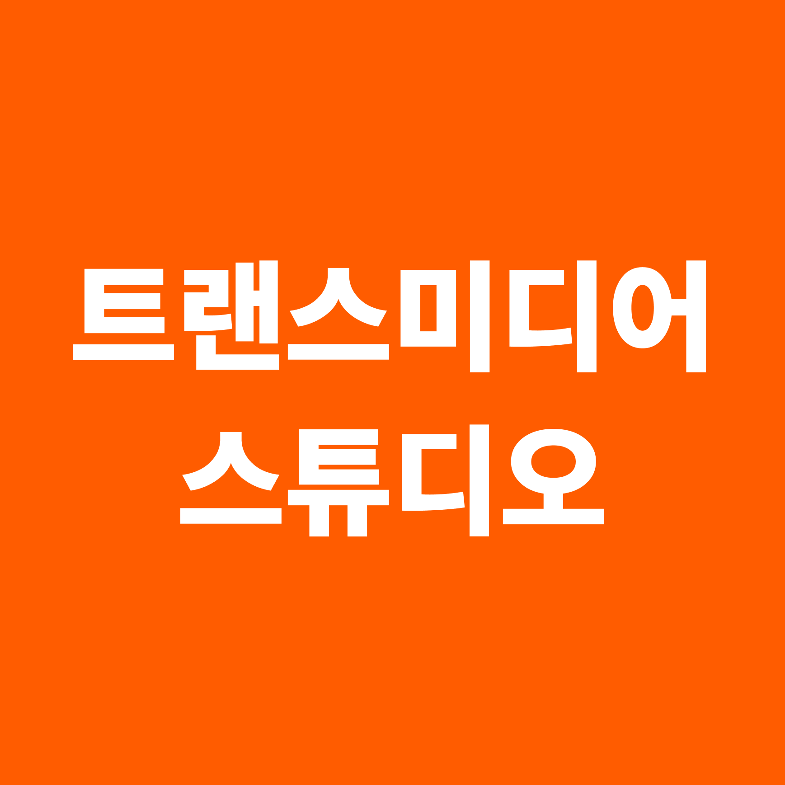
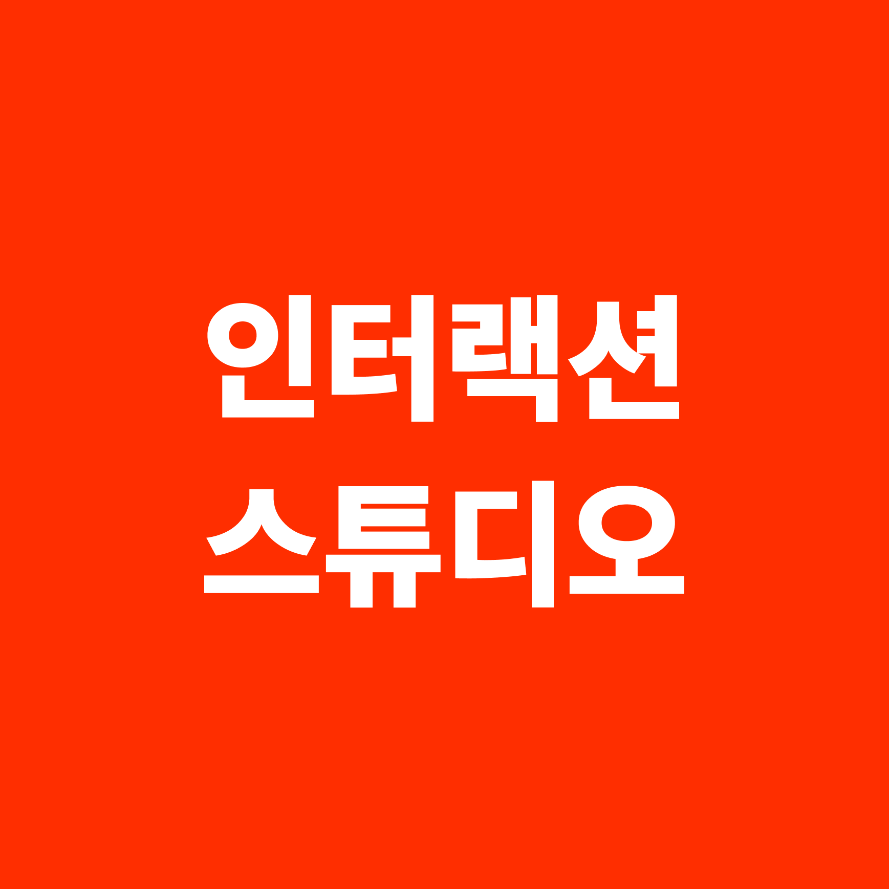
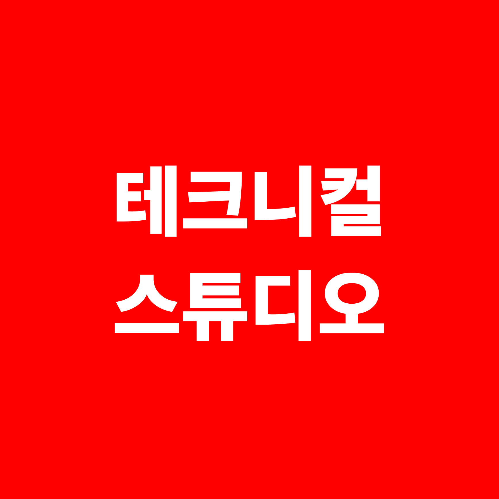

Creative
디지털미디어디자인과는 창의적인 디자인 접근을 위한
다양한 커리큘럼을 제공해 줍니다.
Creative
디지털미디어디자인과는 창의적인 디자인 접근을 위한
다양한 커리큘럼을 제공해 줍니다.
|
Planning Major 기획 전공
실무에서 사용되는 문서 형식을 익히며 프로젝트를 명료하고 설득력 있게 |






|
|
Design Major 디자인 전공
사용자 중심의 디자인 개념을 이해하며 매체별 컨텐츠 제작과 수정 과정을 |
|
|
Programming Major 프로그래밍 전공
서버사이드 언어의 특성을 이해하고 서버 스크립트 언어를 이용한 개발을 |
|
Here is...